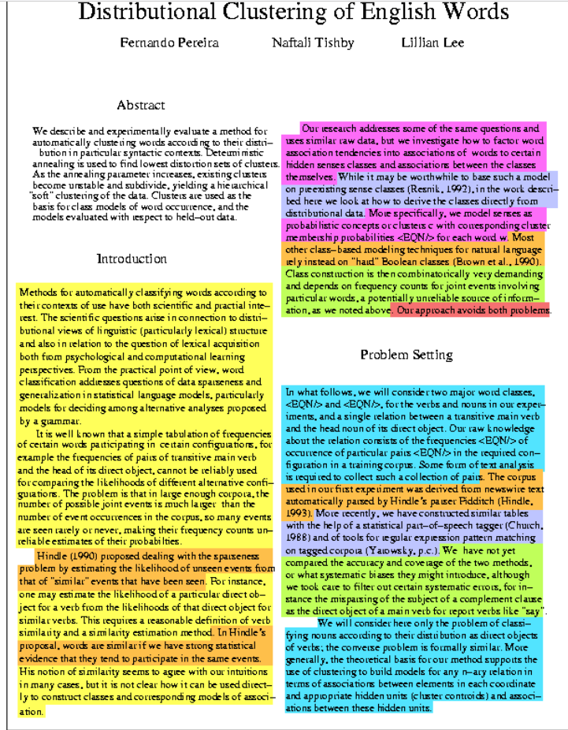
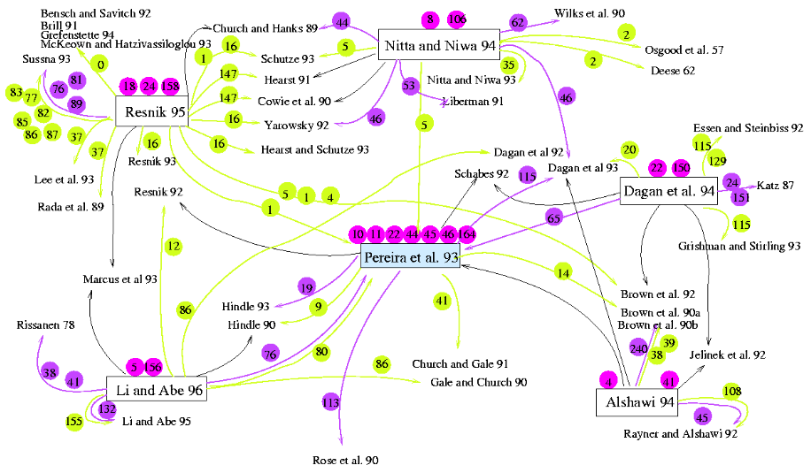

[TOC]
- Title: Argumentative Zoning
- Author: Simone Teufel
- Publish Year: 2000
- Review Date: Feb 2022
https://www.cl.cam.ac.uk/~sht25/az.html
Summary
Abstract
We present a new type of analysis for scientific text which we call Argumentative Zoning.
We demonstrate that this type of text analysis can be used for generating user-tailored and task-tailored summaries and for performing more informative citation analyses.
We also demonstrate that our type of analysis can be applied to unrestricted text, both automatically and by humans. The corpus we use for the analysis (80 conference papers in computational linguistics) is a difficult test bed; it shows great variation with respect to subdomain, writing style, register and linguistic expression. We present reliability studies which we performed on this corpus and for which we use two unrelated trained annotators.
The definition of our seven categories (argumentative zones) is not specific to the domain, only to the text type; it is based on the typical argumentation to be found in scientific articles. It reflects the attribution of intellectual ownership in scientific articles, expressions of authors’ stance towards other work, and typical statements about problem-solving processes.
On the basis of sentential features, we use two statistical models (a Naive Bayesian model and an ngram model operating over sentences) to estimate a sentence’s argumentative status, taking the hand-annotated corpus as training material. An alternative, symbolic system uses the features in a rule-based way.
Definition
The definition of the argumentative Zones is given by the sentential-rhetorical speech act of single, important sentences
- (landmark sentences, e.g. “in this paper we develop a method for” or “in contrast to REFERENCE, our approach uses …”).
The zones, each associated with one or more sentences, are the following:
- BKG: General scientific background (yellow)
- OTH: Neutral descriptions of other people’s work (orange)
- OWN: Neutral descriptions of the own, new work (blue)
- AIM: Statements of the particular aim of the current paper (pink)
- TXT: Statements of textual organization of the current paper (in chapter 1, we introduce…) (red)
- CTR: Contrastive or comparative statements about other work; explicit mention of weaknesses of other work (green)
- BAS: Statements that own work is based on other work (purple)
Example

Aim
The ultimate aim of this work is to provide an intelligent library search tool for researchers. This could include the summarization of single or multiple articles, and also improved citation indexes. A construct called a “citation maps” could help people grasp relationships between papers, like this the following graphics showing citation relationships between some articles in my test corpus:
